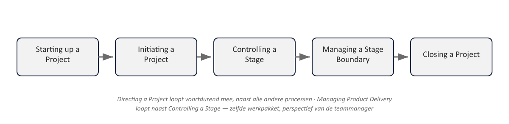

Sheet 1Titel
Project- en Programmamanagement
Niveau 1 · Deel 8: Beheersen, opleveren, faseovergang, afsluiten
Sheet 2De motor van het project
Deel 7: het kader (SU, IP, DP)
Deel 8: de motor — CS, MP, SB, CP
Sheet 3Controlling a Stage: doel
Werk toewijzen, monitoren, issues behandelen, rapporteren, corrigeren
Langstlopende proces binnen elke fase
Sheet 4CS: acht activiteiten
| Groep | Activiteiten |
|---|---|
| Werkpakket | Autoriseren, status beoordelen, ontvangen |
| Monitoring en rapportage | Fasestatus beoordelen, highlights rapporteren |
| Issues | Vastleggen en onderzoeken, escaleren, corrigeren |
- Werkpakket: autoriseren, status beoordelen, ontvangen
- Monitoring: fasestatus beoordelen, highlights rapporteren
- Issues: vastleggen/onderzoeken, escaleren, corrigeren
Sheet 5Managing Product Delivery: doel
Formele interface projectmanager ↔ teammanager
Zelfde werk, ander perspectief
Sheet 6MP: drie activiteiten
Accepteren → uitvoeren → opleveren
| Fase van het werkpakket | CS — perspectief projectmanager | MP — perspectief teammanager |
|---|---|---|
| Toewijzen | Werkpakket autoriseren | Werkpakket accepteren |
| Uitvoeren | Status beoordelen via Checkpoint Reports | Werkpakket uitvoeren, kwaliteit bijhouden |
| Opleveren | Voltooid werkpakket ontvangen | Werkpakket opleveren, met acceptatiebewijs |
Sheet 7Tailoring: CS en MP samen
Bij een klein project: één rol, de projectmanager
Functie blijft, scheiding vervalt
Sheet 8Managing a Stage Boundary: doel
Genoeg informatie voor de stuurgroep: fase geslaagd? Project nog gerechtvaardigd? Volgende fase?
Sheet 9SB: activiteiten
- Volgende fase plannen
- Projectplan bijwerken
- Business case bijwerken — het “updated”-moment
- End Stage Report
- Lessen vastleggen
Sheet 10SB: de alternatieve route
Dreigende tolerantie-overschrijding → Exception Plan i.p.v. Next Stage Plan

Sheet 11Closing a Project: doel
Een vast punt: acceptatie bevestigen, doelstellingen evalueren
Geen project zonder formeel einde
Sheet 12Twee triggers
Geplande afsluiting — natuurlijk einde
Premature afsluiting — op instructie van de stuurgroep
Sheet 13Geen aparte fase
CP is onderdeel van de láátste beheersfase
CS en MP lopen nog door
Sheet 14CP: activiteiten
- (Premature) afsluiting voorbereiden
- Producten overdragen
- End Project Report
- Lessons Report, follow-on actions, bijgewerkte batenbeheeraanpak
Sheet 15Terug naar bevinding 7
Batenbeheeraanpak bijgewerkt bij afsluiting → batenreviews ná het project expliciet gepland
Precies wat bij WGP 2.0 ontbrak
Sheet 16Het complete plaatje

Sheet 17Vooruitblik
Deel 9: wat IPMA-D toevoegt
Deel 10: examentraining + PID-capstone